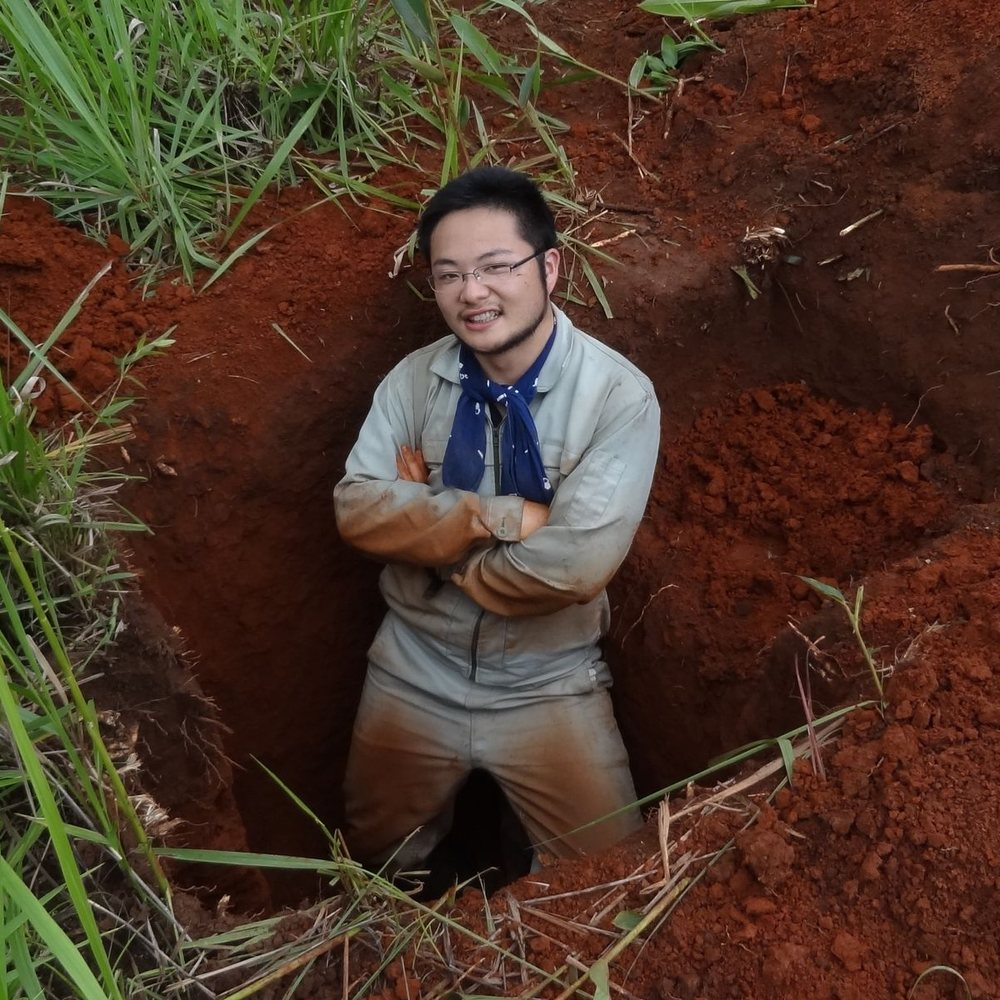
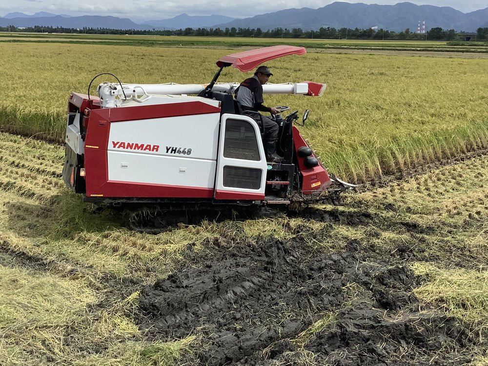

熱帯の森やサバンナから、日本の田んぼや畑まで。
土の中で起きている養分の動きを現場で測り、
その土地に合った、環境への負担が少ない農業のかたちを探っています。
柴田 誠 准教授・京都大学博士（農学）
農学研究科 土壌学研究室と連携して研究を進めています

研究の概要
食べものの足元には、土がある。
私たちの食べものの95%は、直接または間接に、土の上でつくられています（FAOの推計）。土は、この地球で人類が生きていくための基盤です。その土の中で、窒素やリンなどの養分はどう巡り、どこへ失われていくのか。「持続的な農業」と言うとき、それは何年先まで、誰にとってのことなのか。土を掘り、測って、そこから考えたいと思っています。

最近のできごと
学会・論文・お知らせ
フィールド
連絡先
見学・相談はいつでもどうぞ
研究の内容、進学、共同研究について。メールで気軽に連絡してください。
〒606-8502 京都市左京区北白川追分町
京都大学 農学部総合館 S-584／S-572
TEL 075-753-6101（代表）／075-753-6299（直通）